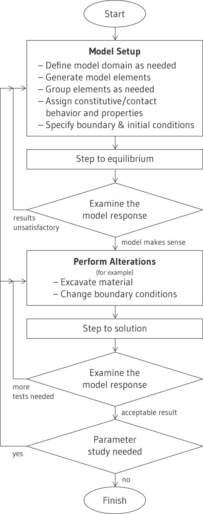

一般求解流程（图解）
在 Itasca 软件中，总体方法（General Approach）中描述的建模方法学使用起来很方便，因为它再现了物理环境中发生的处理过程序列。该方法的流程如下图所示。


图 1：一般求解流程：软件中作为工作流的建模方法学。
该图试图对所有程序作一般化处理——因此它与 flac3d、pfc 或 3dec 文档中显示的版本有所不同
工作流的第一步是模型设置，至多需要指定问题的四个基本组成部分：
- 模型域（仅 PFC）；
- 核心模型，由基本模型要素构成（PFC 中的颗粒集合体；FLAC3D 中的网格单元网格；3DEC 中由节理块体构成的形体）；
- 接触行为和/或本构行为以及材料属性；以及，
- 边界条件和初始条件
上述列表中涵盖了过去仅针对 PFC 的内容，并试图加入 FLAC3D 和 3DEC——需要复核！！
本页来自 PFC 领域，因此下一段过于针对 PFC。它与再下一段原本是一段。不过我在这里把它们拆开，并把第二段一般化到对全部程序在描述上都准确的程度。那么，第一段该怎么办……
模型几何由颗粒的位置和尺寸分布（PFC）、多边形块体的集合（3DEC）或分区的体积（FLAC3D）来定义。接触行为和/或材料属性决定了模型在受到扰动（例如开挖引起的变形响应）时表现出的响应类型。在此阶段，选择合适的能量耗散机制至关重要。
边界条件和初始条件定义了原位状态（即，在问题状态发生改变或扰动之前的状态）。在这些条件确定之后，计算模型的初始平衡状态。然后进行某种改变（例如开挖材料或改变边界条件），并计算模型由此产生的响应。Itasca 程序对问题的实际求解方式不同于传统的隐式求解程序。Itasca 程序都使用显式时间推进方法求解代数方程。解是在一系列计算步之后得到的。在每个程序中，达到解所需的步数既可由程序自动控制，也可由用户手动控制。然而，用户最终必须判断步数是否足以达到求解状态。
| 这些内容对您有帮助吗？… | FLAC3D © 2019, Itasca | 原文更新于 2020 年 10 月 8 日 |